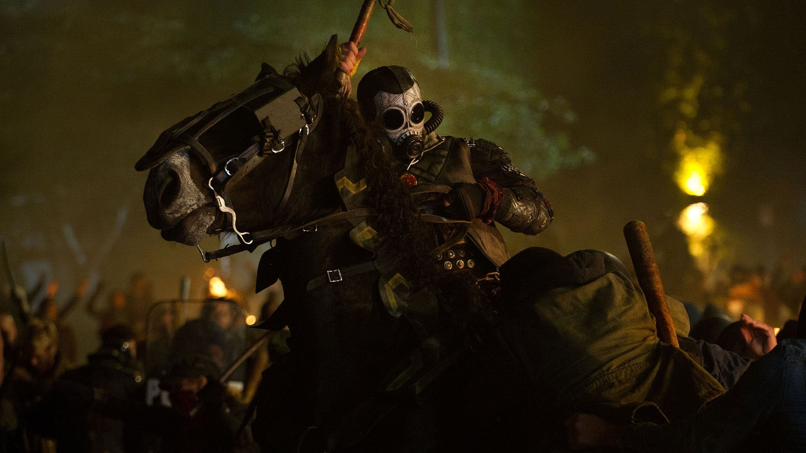
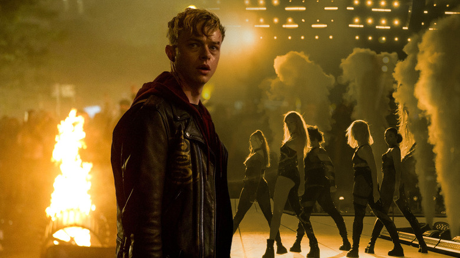
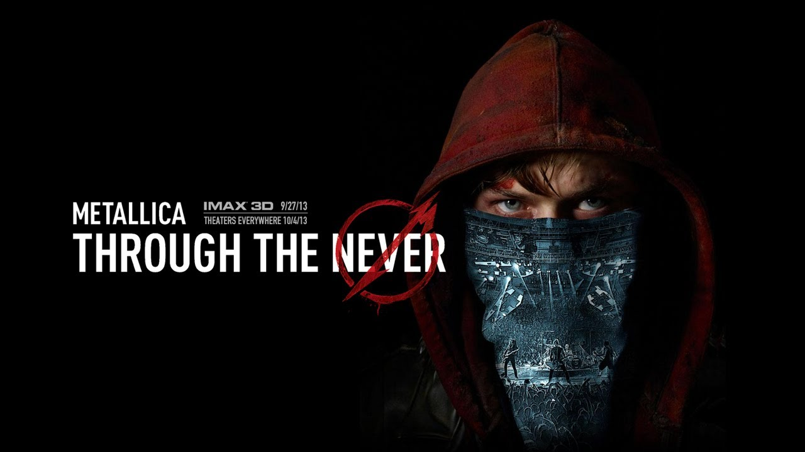

A Through the Never egy 2013-ban bemutatott játékfilm, amelyet a Metallica közreműködésével készítettek. A film különlegessége, hogy egy koncertkörnyezetbe helyezett történetet mesél el, amely ötvözi az akciófilmek és a posztapokaliptikus alkotások elemeit.
A történet középpontjában Trip áll, egy fiatal stábtag, akit egy egyszerű feladattal bíznak meg. Küldetése során azonban váratlan események sorozatába keveredik, és egy kaotikus, veszélyes városban találja magát. A film során a valóság és a szimbolikus események gyakran összemosódnak, ami különleges hangulatot ad az alkotásnak.
A filmet Antal Nimród rendezte, aki magyar származású filmrendezőként nemzetközi szinten is ismertté vált. A Through the Never látványvilágát és történetvezetését sok kritikus egyedinek nevezte, mivel a hagyományos koncertfilmes megközelítés helyett egy teljes értékű mozifilmet alkotott.
Bár a film megosztotta a közönséget, a Metallica egyik legkülönlegesebb filmes projektjének számít. A produkció jól mutatja, hogy a zenekar pályafutása során többször is nyitott új művészeti területek felé, és nem félt kísérletezni a hagyományos formáktól eltérő ötletekkel.


